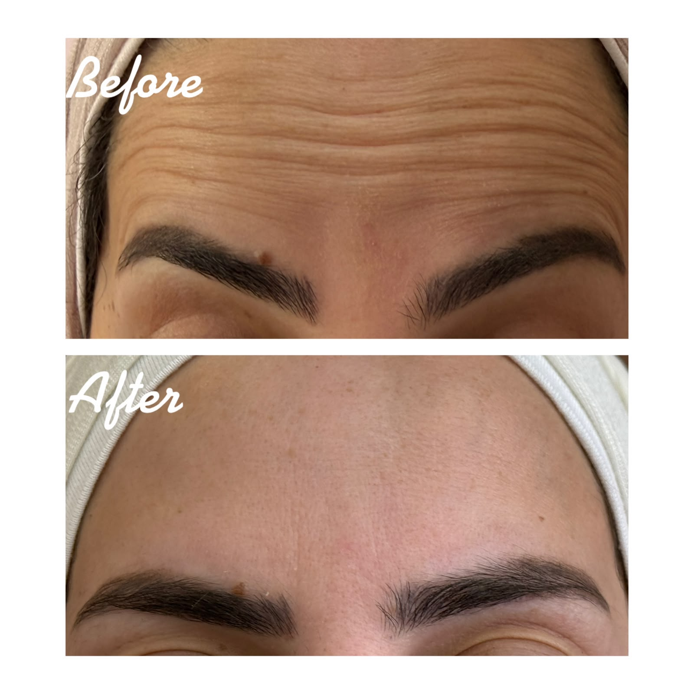
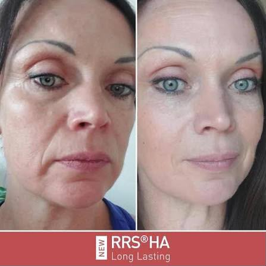
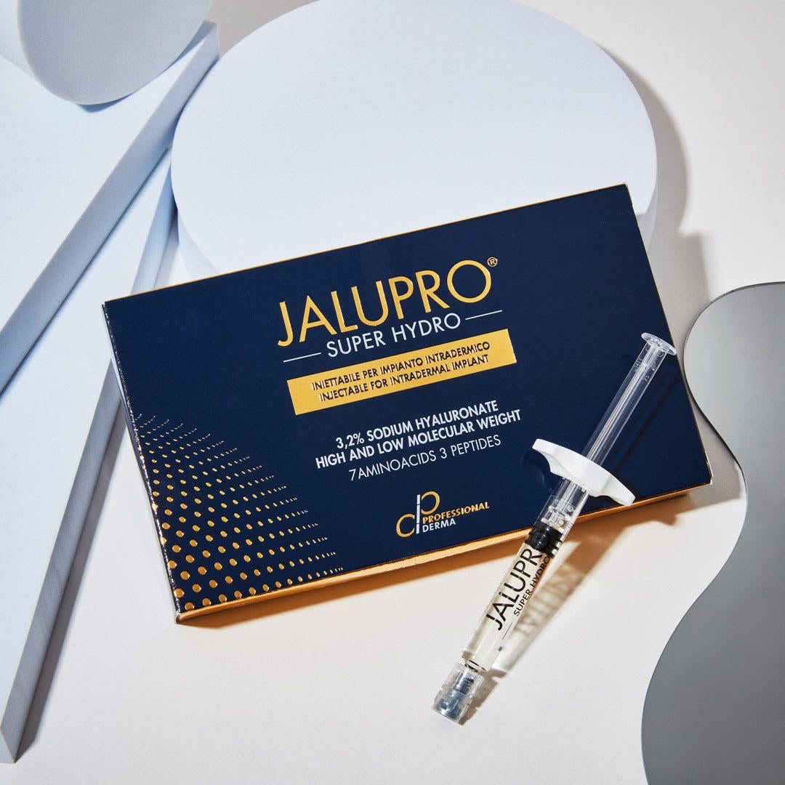
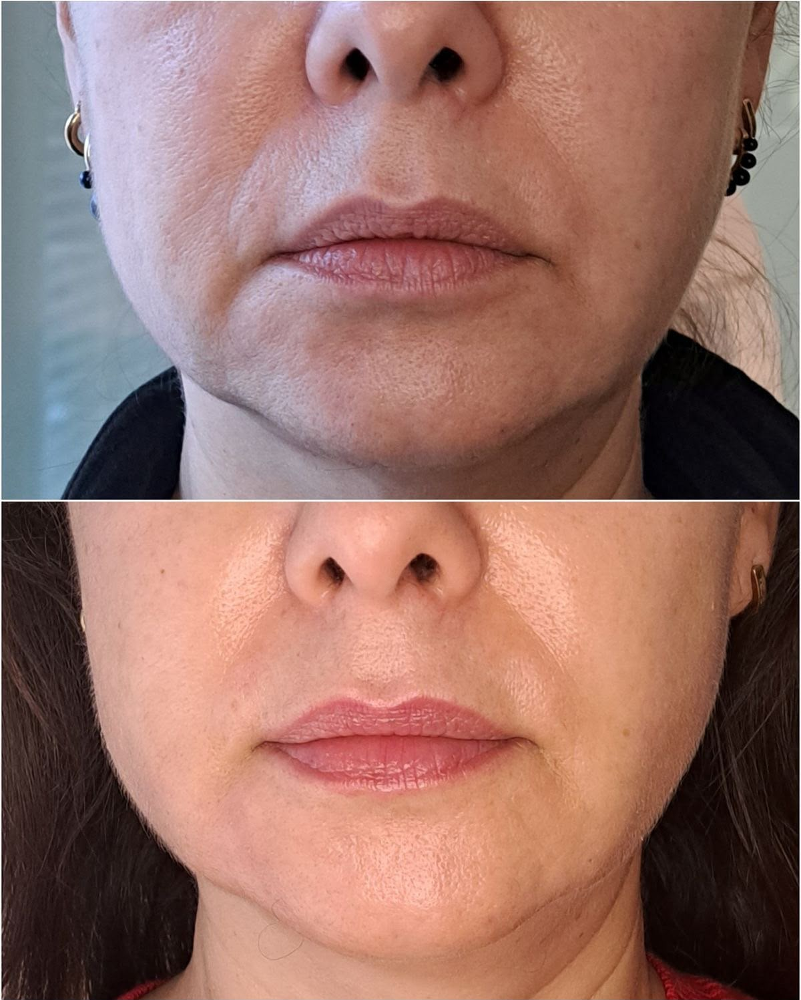
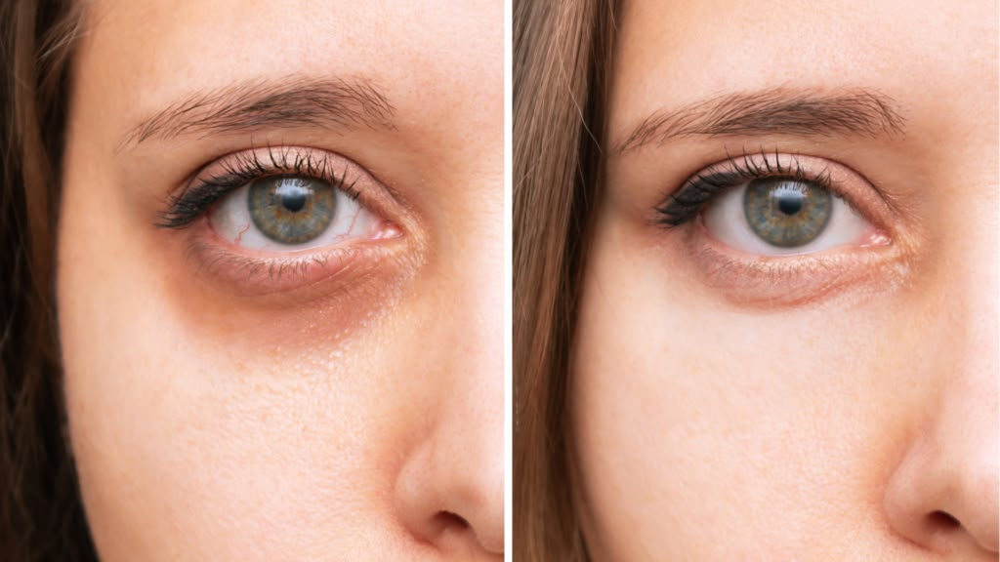

جلسة بوتوكس

علاج فعّال لتقليل التجاعيد الدقيقة والخطوط التعبيرية للحصول على بشرة شابة ومشدودة.
900 شيكل
جلسة بوتوكس ثلاث مناطق
900 شيكل
- تقليل ظهور خطوط الجبين والتجاعيد التعبيرية.
- تنعيم مظهر البشرة ومنح الجبين مظهراً أكثر نعومة.
- الحد من تعمّق الخطوط الناتجة عن حركة عضلات الجبين.
- منح مظهر أكثر راحة وانتعاشاً للوجه.
- الحفاظ على تعابير طبيعية عند تطبيق الجرعة والتوزيع المناسبين.
- المساعدة على الوقاية من ظهور الخطوط بشكل أعمق مع مرور الوقت
إبرة نضارة RRS

إبرة نضارة (Long Lasting) لترطيب عميق وتجديد حيوية البشرة وشدها بفعالية وتأثير يدوم.
1000 شيكل
إبرة نضارة RRS (Long Lasting) / Lola
1000 شيكل
- ترطيب عميق وتحسين مستوى رطوبة البشرة.
- تحسين نعومة وملمس البشرة.
- تعزيز مرونة الجلد ومظهره الحيوي.
- تحفيز البشرة ودعم إنتاج الكولاجين.
- المساعدة على تقليل مظهر الخطوط الدقيقة.
- تحسين مظهر البشرة المجهدة والباهتة.
- تمنح البشرة مظهراً أكثر نضارة وامتلاءً بشكل طبيعي.
- مناسبة للوجه والرقبة بحسب تقييم الطبيب.
المكونات الأساسية: حمض الهيالورونيك ومكونات داعمة لترطيب وتجديد البشرة، بحسب نوع المنتج المستخدم.
Jalupro Superhydro


إبرة نضارة مبتكرة لتحفيز إنتاج الكولاجين الطبيعي، لشد ورفع ملامح الوجه وتجديد شبابها.
السعر الحالي 1000 شيكل 1200 شيكل
جلسة النضارة — Jalupro Superhydro
السعر الحالي 1000 شيكل 1200 شيكل
- تحفيز إنتاج الكولاجين ودعم تجدد البشرة.
- تحسين ترطيب البشرة من الداخل.
- تحسين مرونة الجلد ومظهره العام.
- تقليل مظهر الخطوط الدقيقة.
- تحسين ملمس البشرة ونعومتها.
- المساعدة على استعادة نضارة وحيوية البشرة.
- تمنح البشرة مظهراً أكثر إشراقاً وشباباً.
التركيبة: حمض الهيالورونيك + مجموعة من الأحماض الأمينية، بحسب تركيبة Jalupro المستخدمة.
إبرة Vitaran i

إبرة DNA Salmon المتطورة لتحفيز التجدد الخلوي وترميم الأنسجة لصفاء ونضارة فائقة.
700 شيكل
Vitaran i — منطقة تحت العين
700 شيكل
- تحسين مظهر الهالات السوداء.
- تقليل مظهر التعب والإرهاق حول العينين.
- تحسين مرونة الجلد في منطقة تحت العين.
- المساعدة على تنعيم الخطوط الدقيقة.
- ترطيب وتحسين جودة الجلد.
- تحسين مظهر التجويف والجلد الرقيق حول العين.
- منح منطقة تحت العين مظهراً أكثر نضارة وحيوية.
المادة الأساسية: DNA Salmon المستخدمة لدعم تجدد وتحسين جودة البشرة.
ابرة علاج الهالات تحت العين
jalupro Young eye

مخصصة لعلاج الهالات السوداء والخطوط الرفيعة حول العينين لاستعادة النضارة والإشراق.
السعر الحالي 900 شيكل 1100 شيكل
ابرة علاج الهالات تحت العين Jalupro Young Eye
السعر الحالي 900 شيكل 1100 شيكل
- تحسين مظهر الهالات والتصبغات حول العين.
- تقليل مظهر الإرهاق والبهتان تحت العين.
- ترطيب البشرة الرقيقة في منطقة حول العين.
- تحسين مرونة الجلد ومظهره العام.
- المساعدة على تقليل مظهر الخطوط الدقيقة.
- تحسين نعومة ونضارة منطقة تحت العين.
- دعم تجدد البشرة وتحسين جودتها.
- منح منطقة العين مظهراً أكثر حيوية وإشراقاً
إبرة ترطيب الشفايف

إبرة مخصصة لترطيب الشفاه بعمق وتوريدها، لمنحها مظهراً صحياً وجذاباً يدوم طويلاً.
600 شيكل
إبرة ترطيب وتجميل الشفاه
600 شيكل
- ترطيب عميق وتحسين جفاف الشفاه.
- تحسين نعومة وملمس الشفاه.
- منح الشفاه مظهراً أكثر حيوية ونضارة.
- تحسين الخطوط الدقيقة في منطقة الشفاه.
- تعزيز الامتلاء الطبيعي بشكل خفيف.
- تحسين تحديد ومظهر الشفاه دون تغيير مبالغ فيه في الشكل.
- المساعدة على استعادة مظهر الشفاه الصحي والمرطب.
فيلر الشفاه والوجه
استعادة الحجم المفقود في الوجه وتعزيز امتلاء الشفاه بشكل طبيعي ومتناسق لمنحك مظهراً أكثر شباباً وحيوية.
يبدأ من 600 - 1200 شيكل
فيلر الشفاه والوجه
يبدأ من 600 - 1200 شيكل
فيلر الشفاه
- تعزيز امتلاء الشفاه بشكل طبيعي ومتناسق.
- تحديد وتحسين شكل وحواف الشفاه.
- تحسين ترطيب ونعومة الشفاه.
- تقليل مظهر الخطوط الدقيقة حول الشفاه ومنحها مظهراً أكثر شباباً.
فيلر الوجه
- استعادة الحجم المفقود في مناطق الوجه.
- تحسين وتحديد ملامح الوجه وتناسقها.
- تقليل مظهر الخطوط والتجاعيد المرتبطة بفقدان الحجم.
- منح الوجه مظهراً أكثر امتلاءً وحيوية وشباباً.
محفزات الكولاجين للوجه
Sculptra | Juvelook | Lenisna

تحفيز إنتاج الكولاجين الطبيعي لاستعادة الحجم، وتحسين مرونة ونضارة البشرة بشكل طبيعي وتدريجي يدوم طويلاً.
2200 شيكل
محفزات الكولاجين للوجه (Sculptra | Juvelook | Lenisna)
2200 شيكل
- تحفيز إنتاج الكولاجين الطبيعي في البشرة.
- تحسين مرونة وتماسك الجلد بشكل تدريجي.
- استعادة مظهر أكثر امتلاءً وحيوية للوجه.
- تحسين ملمس البشرة وتقليل مظهر الخطوط الدقيقة.
- المساعدة على تحسين مظهر ترهل البشرة وفقدان الحجم.
- تعزيز نضارة البشرة ومظهرها الصحي.
- تمنح نتائج تدريجية وطبيعية مع تحفيز البشرة على التجدد.
- يتم اختيار النوع والتقنية المناسبة حسب حالة البشرة واحتياجات كل شخص.